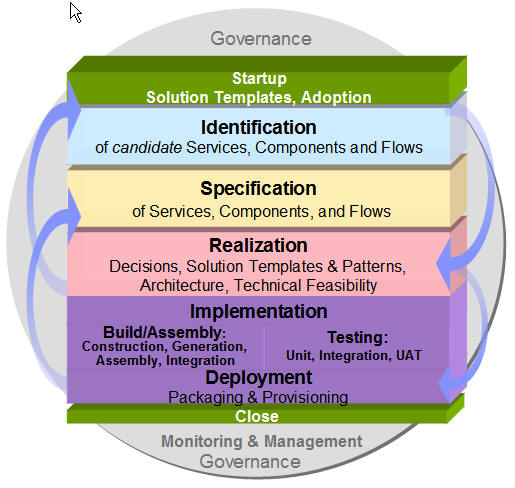
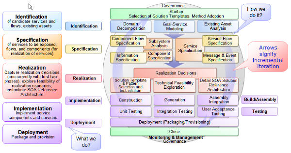
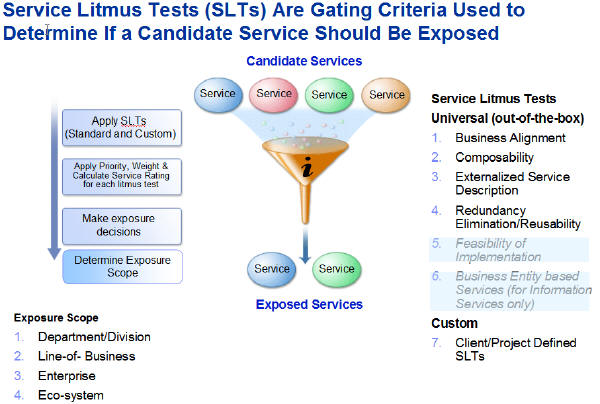
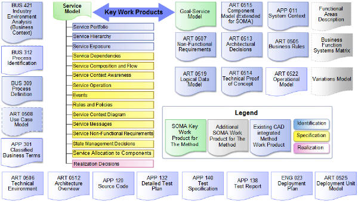
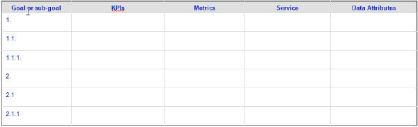

The Service Oriented Modeling and Architecture (SOMA) method provides in-depth guidance on how to move from the
business models created through Component Business Modeling (CBM) or similar business analysis techniques, to the
models required by a SOA solution design. Building a service-oriented architecture requires more than just a list of
services. It requires conceptualization, identification, specification and realization of services that bring business
and IT together in the SOA paradigm. This requires modeling the attributes of each service and their relationships. It
requires a technique for the analysis and design of services.
SOMA is a method aimed at enabling target business processes through the identification, specification and realization
of business-aligned services that form the SOA foundation. SOMA creates continuity between the business intent and IT
implementation by extending business characteristics (e.g. goals and key performance indicators) into the IT analysis
and architectural decisions. The analysis and modeling performed during SOMA is not specific to any technology or
product, but establishes a context for making technology and product specific decisions in later phases of the
lifecycle. Its goal is to provide guidance in the modeling (analysis and design) of SOA.
Business componentization and analysis provide inputs essential to SOMA:
-
business transformation focus area with descriptions of its logical groupings of business capabilities (i.e.
partitioning into business domains),
-
business process model for the focus area and
-
business goals and corresponding metrics.
SOMA produces outputs that are required by SOA implementation activities. Key work products include:
-
Service Model
-
Goal-Service Model (GSM)
-
Component Model
Organizations define goals to meet their mission and to set strategic direction. Although there are no universally
agreed-upon terms, expressions such as "goals", "business goals" or "strategic goals" are often used by business
stakeholders to mean business aspirations. In SOMA, the term goal denotes a business aspiration, usually at a high
level (e.g. increase revenue by 5%).
Once an enterprise has analyzed its mission and defined its goals, it needs a way to measure progress toward those
goals. Many things contribute to organization's success. Those that are key contributors such as Key Performance
Indicators (KPI's), also known as Key Success Indicators (KSI's) or Key Business Indicators (KBI's), are used by
businesses to define and measure progress toward their goals. In SOMA, KPI's represent quantifiable measurable
objectives, agreed to beforehand, that reflect the critical success factors of an organization.
KPI's differ depending on an industry and an organization. A sales organization may have as one of their KPIs the
percentage of its sales that comes from return customers. A Customer Service Organization may have a KPI that measures
a number of customer calls answered in under a minute. To determine if the objectives associated with a KPI are being
met, the KPI may need to be broken down into one or more metrics, which identify specific measurements to collect for
analysis (e.g. time to close an average sale deal).
SOMA activities are grouped into major steps, including Identification, Specification, Realization, Implementation and
Deployment as shown below.

Figure 1. SOMA Major Steps
Figure 2 shows each step subdivided into individual activities. Each step is carried out by applying one or more
complementary techniques, many of which are likely to be familiar to practitioners reading this paper.

Figure 2. SOMA Lifecycle
Goal-service modeling
The primary objective of Goal-Service Modeling is to align services with business goals and to facilitate
identification and prioritization of services. In addition, it is used to filter out those services that do not meet
business goals.
Goal-Service Modeling links services to business goals and identifies services by analyzing the goals of an enterprise
or a business unit. This technique starts with generalized statements of business goals, with subsequent decomposition
into sub-goals that must be met in order to fulfill the higher level goal. This eventually leads to a level of
decomposition that supports the identification of services associated with the sub-goals. During this process, KPIs are
identified and collected; along with the metrics that will be used to measure, monitor and verify the degree of success
in actually achieving the goals.
Goal-Service Modeling establishes the conceptual link between services and business goals, as well as the means to
demonstrate whether the goals are actually being achieved once the services are implemented. It also narrows the focus
of analysis for the other two service identification techniques.
Variation-oriented analysis and Variation-oriented design
Variation-Oriented Analysis (VOA) isolates functional and structural aspects of the domain that have
variations or are likely to change from those aspects that represent commonalities or likely to remain unchanged.
Variation-Oriented Design (VOD) then designs pluggable system variations that can evolve and grow without intrusive
alterations to architecture and code.
VOA is applied during the analysis phase of an engagement (e.g. Macro Design) and provides input to VOD. VOD takes
place during the design (e.g. Micro Design). For simplicity, both VOA and VOD are discussed together in this section
because of their similarity and their relationship to each other. VOA is used during SOMA Identification and VOD is
used during SOMA Specification.
A key benefit of applying VOA and VOD is achieved when elements of the domain that are most likely to change are
isolated and externalized. As a result, the introduction of future variations requires less restructuring of the
application or architecture. For example, the identification of Account Type and Account Rule Type simplifies the
introduction of new accounts, each with their own components and rules, without having to substantially alter the
existing structure or function of the system.
Identification and modeling of business elements that are expected to vary over time parallels in some respects the
concept of generalization and specialization commonly applied during OOAD to achieve a well normalized design. VOA and
VOD, however, go further by externalizing the instance of each variation that results in a more flexible design that is
highly adaptable to change over time. This is achieved by modeling the domain in terms of type hierarchies at each
point of variation and associating externalized type and variation rules with a common type and rules that represent
the commonalities spanning all the variations.
Specification
In this step, the three key elements of services, components and flows are elaborated through the following
activities:
-
Service specification - defines the dependencies, composition, exposure decisions, messages, quality service
constraints and decisions regarding the management of state within a service.
-
Subsystem analysis - identifies the service components (and related functional and technical components) and
relationships that will be used to realize the services.
-
Component specification - elaborates on the service components and creates the details of the service
components required to realize services.
A key technique used in the SOMA Specification step is the Service Litmus Test (SLT). An overview of the SLT is
provided below.
Service Litmus Test
During SOMA Identification, a list of candidate services (and other elements) is identified. During SOMA
Specification, decisions are made to establish which of these candidate services will actually be exposed for a SOA
solution.
Figure 3 depicts the four (out-of-the-box) gating criteria of the SLT used to determine if a candidate service should
be exposed.
-
Business alignment
This refers to the traceability of a service to business goals, i.e., is the service of value to a business?
-
Composability
A service that is composable is self-contained and can participate in a composition or choreography. It is
deployed independently but may cooperate with other services at run-time to execute business processes in
support of business goals. There are no external dependencies involved that would disallow the service from
participating in a composition.
-
Externalized Service Description
A service has an externalized service description, either generated through automated tools or created
manually.
-
Redundancy Elimination/Reusability
This refers to the functionality of a service being provided once and used in multiple business processes.

Figure 3. Service Litmus Test Criteria
Realization Decisions
This step deals with the architectural and realization decisions that have to be made to implement the service
functionality, taking into consideration quality of service as well as business and IT constraints. These decisions are
made and refined throughout the SOMA process and comprises of the following activities:
-
Service allocation - deals with the allocation of services into their appropriate component containers.
-
Component allocation to layers - identifies appropriate architectural layers where components are to be placed
and the rules for how the layers interact with each other.
-
Technical feasibility exploration - assessment of feasibility of technical constraints and technology
identified to realize services.
Service allocation
A key technique used in SOMA realization decisions step is service allocation.
Service allocation associates services with service components that will realize them. Service allocation is an ongoing
and iterative process that can start as soon as services and service components are first identified (i.e. during the
SOMA Identification step). During service realization decisions, it is essential to verify that services have been
allocated to service components. Validation of service allocation decisions can lead to some refactoring in cases where
a service that was initially assigned to one component needs to be re-assigned to another as a result of evaluation of
refined requirements.
SOMA work products
There are four new work products where Service Model and Goal-Service Model are two key ones. Another key work
product, the Component Model, is leveraged to document the details of service components which are used to realize
services.
Figure 4 shows the work products involved during SOMA. The Service Model captures the initial list and categorization
of candidate services, as well as the specification and realization decisions for services that will be exposed. Note
that realization decisions are actually documented in the Architectural Decisions work product. Components and flows
are captured at several levels of elaboration during SOMA identification and specification steps in Process Definition,
Use Case Model, Service Model and Component Model work products.

Figure 4. SOMA and Related Method Work Products
The Service Model, depicted below in figure 5, augments other method work products by capturing information related to
services not captured in other work products. The service model is built incrementally as Service Oriented Modeling and
Architecture (SOMA) activities are iteratively carried out. It is composed of a number of elements summarized in the
table below.
|
Section
|
Description
|
SOMA step where created
|
|
Service Portfolio
|
List of candidate services discovered during SOMA service identification activities.
|
SOMA Identification:
· Domain Decomposition
· Goal-Service Modeling
· Existing Asset Analysis
|
|
Service Hierarchy
|
Candidate services organized using a business significant categorization scheme, making evaluation of
candidate service more manageable. Domain Decomposition Functional Area Analysis typically provides the
classification scheme.
|
SOMA Identification:
· Domain Decomposition: Functional Area Analysis
|
|
Service Exposure
|
Documents the rationale behind why we chose to expose a given candidate service or group of services in
the service hierarchy or composition. The Service Litmus Test is applied to candidate services to make
exposure decisions.
|
Service Specification:
· Exposure Decisions using the Service Litmus
Test as part of Service Re-factoring and Rationalization
|
|
Service Dependencies
|
Documents dependencies between services in the model.
|
Service Specification:
· Model Service Dependencies
|
|
Service Composition and Flow
|
Identifies which services are choreographed together to form a composite service.
|
Service Specification:
· Identify Service Composition and Flow
|
|
Service Context Aware Attributes
|
Specifies context aware attributes for dynamic assembling and routing.
|
Service Specification
· Specify Context-Aware Service
Specification
|
|
Service Operation
|
Identifies service operations.
|
Service Specification
· Identify Service Operation
|
|
Events
|
Identify events that trigger services and service operations.
|
Service Specification:
· Identify Events
|
|
Rules and Policies
|
Specify/associate rules executed by service and service operation and policies it follows.
|
Service Specification
· Associate Business Rules and Policies
|
|
Service Context Diagram
|
Illustrates the service consumers and service providers.
|
Service Specification
· Specify Context-Aware Service
Specification
|
|
Service Messages
|
Documents messages that are exchanged between service consumer and service provider.
|
Service Specification:
· Specify Input, Output, Error Messages
|
|
Service Non-Functional Requirements
|
Documents the non-functional requirements that dictate those characteristics.
|
Service Specification:
· Gather and Categorize Non-functional Requirements
|
|
State Management Decisions
|
State can be an important consideration for composite services and the related decisions are documented
here.
|
Service Specification:
· Document
State Management Decisions
|
|
Service Allocation To Components
|
Map to Service Component realizing the service and Functional and Technical Components
|
Component Specification:
· Allocate Services to Component
|
|
Realization Decisions
|
Documents architectural decisions that deal with how the
services will be realized, such as buy, build, subscribe, etc. Nonfunctional requirements are prominent
criteria in many of these decisions. Realization Decisions are documented in the Architectural
Decisions work product.
|
Realization:
· Establish Realization Decisions
|
Figure 5. Service Model Detail
Goal-service model work product
The Goal-Service Model work product links business goals (e.g. increase revenue by new product introduction) and KPI's
(e.g. 4% increase in revenue from new product X) with the services that will fulfill them. This work product captures
information on high-level business goals and sub-goals, KPI's, metrics to measure KPI's and services to support the
goals. The table below shows a template to document the information.

Figure 6. Goal-service model template
-
Goal or sub-goal: Organizations define goals to meet their mission and to set strategic
direction. In SOMA, the term goal denotes a business aspiration starting at a high level. For example a high
level goal could be to increase revenue. This goal can be decomposed into sub-goals such as "increase revenue
from <x>", and "increase revenue from <y>".
-
KPI's: KPIs are used to determine how well a business is meeting its goals, or to assess the
level of performance of business processes. For example, for the goal "increase revenue", a specific KPI could
be "increase revenue by 5% during the next fiscal year". This provides a specific way to determine if the goal
has been met.
-
Metrics: Metrics identify the type of measurements that need to be collected to assess the
state of the KPIs. For a KPI such as "increase revenue by 5% during the next fiscal year", a metric could be
"record the revenue from all revenue generating transactions". Measurements would then need to be taken of each
relevant transaction, across all systems that support those transactions. An implication of this is that all of
the individual measurements dictated by the metric would need to be aggregated and reported in a meaningful way
so that it can be determined if the related KPI has been met.
-
Service: a (candidate) service that can be used to meet the goal or sub-goal. This reflects a
mapping between goals (or sub-goals) and services in the service portfolio of the Service Model work product.
Initially the service mapping will be based on candidate services. Later as specific service exposure decisions
are made, candidate services can become services chosen for exposure. Service exposure decisions are recorded
in the Service Model work product.
-
Data Attributes: Data attributes necessary to measure KPIs and metrics.
As mentioned, SOMA activities are subdivided into three major steps: Identification, Specification and Realization
Decisions. These steps, which are carried out in an iterative fashion, building up the services portfolio, specifying
services chosen for exposure, and making key realization decisions that are required in order to carry out activities
that take place later in the solution development life cycle.
Create a Service Portfolio
SOMA describes three identification techniques that can be used to add services to the Service Portfolio. Domain
Decomposition is a top-down business-driven decomposition of a business domain, into functional areas, subsystems and
components. Existing Asset Analysis is a bottom-up analysis that examines assets such as existing custom,
packaged applications, and industry models, to determine what can be leveraged to realize service
functionality. Goal-Service Modeling is an analysis that starts with business goals that are decomposed into
sub-goals and supporting services.
Organize the Service Portfolio using a classification hierarchy
The service candidates in the Service Portfolio can be categorized by applying a classification scheme
that is meaningful to the SOA initiative. Functional areas that were identified during Functional Area Analysis provide
a useful business context for developing a classification scheme.
Make Service Exposure Decisions
The Service Portfolio initially identifies candidate services that have not been fully evaluated for service exposure.
Service exposure decisions will eventually be made, at which time some or all of the services in the Service Portfolio
will be chosen for exposure.
In order identify those services that need to be exposed a set of criteria in the form of the Service Litmus Test (SLT)
can be used. This metaphor is used to denote a set of tests, that when applied, will determine if a given set of
services should be eligible for exposure.
Identify Service Dependency
Detailed review of the service will often expose a set of dependencies between services and between services and the
applications they rely on for realization of their functionality. Although, most dependencies might be on other
(exposed)services, some may be on components that have not been chosen to be exposed as a service.
Identify Service Compositions
Choreography or orchestration can be used to create a composition of services. That composition may or may not itself
be a service. For example Business Process Execution Language for Web Services (BPEL4WS) can be used to implement the
choreography or flow of services.
Summarize key non-functional requirements
A service consumer typically has expectations such as how fast a service will perform and its level of availability. A
service provider may impose certain requirements on a service consumer such as a security related requirement. It is
convenient to summarize requirements of this type in the service model to support validation of various aspects of the
model as well as decisions related to how services will be realized.
Create Message Specification
Services require input and output messages. Messages are identified and specified at a high level in the service model
(i.e. this is not a detailed level of specification).
Identify state management requirements for compositions
Although individual services are considered stateless, compositions often have requirements to maintain
state information across the invocation of the composed services. The choreographer of the services is often
responsible for the management of state. Alternatively, a component that implements and realizes multiple related
services or operations on services may need to maintain state between invocations for performance reasons. State
Management in SOA environment can be considered to fall into three main categories: Transaction State, Security State
and Functional State.
Conclusion
This overview of SOMA is intended to cover the essentials of the method -- just enough to help the solution design
architect using Team Solution Design to communicate the client environment and requirements and to effectively engage
with a SOMA architect.
Acknowledgement: the above materials were extracted from a whitepaper by Luba Cherbakov, et al. My thanks to Luba,
especially, for the help she gave me in understanding SOMA.
Mark Palmer
|